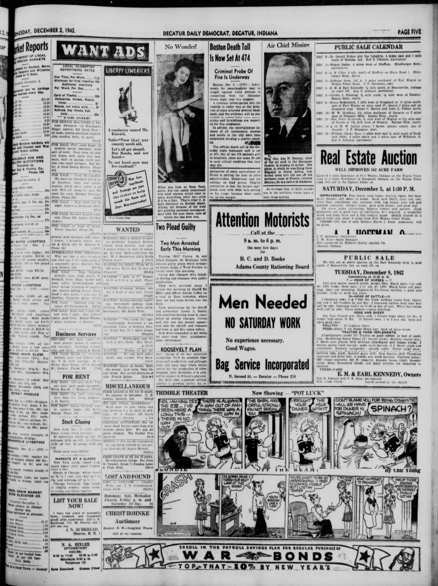
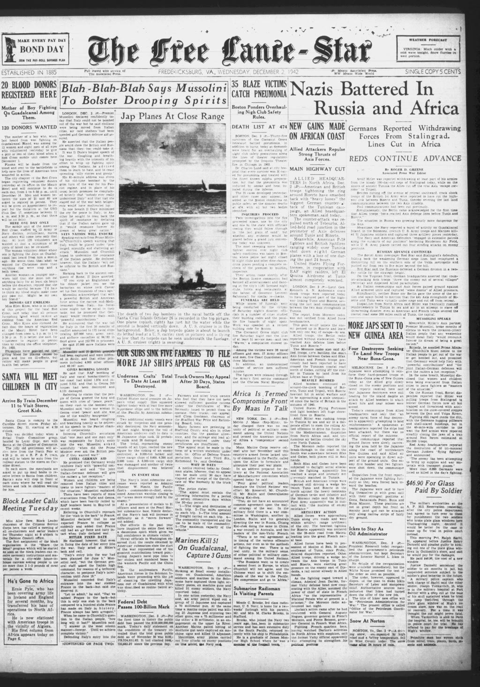

HN HN-536 · December 2, 1942 · Disasters, Accidents & Emergencies > Urban, Forest & Structural Fires > Building and venue fires
Source: Decatur Daily Democrat, p. 5 — original page; NFPA, Cocoanut Grove history.
Report: Two days after the Times used 478, this wire reprint said Boston's death toll was “now set at 474â€, reporting a criminal investigation and widespread nightclub-safety inspections.
Assessment: Even later newspaper figures were not monotonically increasing as identification and definitions changed. The NFPA's later tally is 492. That 474 was temporarily printed does not establish that newspapers were deliberately hiding deaths; it documents uncertain short-term casualty accounting. Compare
Identity-review candidate peers: HN-535:High
Authentic images retrieved from Hoosier State Chronicles (Indiana State Library) and Virginia Chronicle (Library of Virginia). Article crops are located using the archive's own OCR word coordinates and rendered at native crop resolution; article clips are assembled from the archive's own article-block images; page images marked "archive tiles" are stitched from the archive's own tiled page service at its 256-px tile cap; page images marked "issue PDF" are single pages rasterised from the archive's own issue PDF, with the page chosen by matching the headline against the PDF's text layer; page scans are reduced-size access renditions. No images were generated, mocked, or retouched.


Not yet acquired. Queued for provider-specific acquisition testing (see source-acquisition manifest).
URL (preserved verbatim): https://newspapers.library.in.gov/?a=d&d=DCDD19421202.1.5
Saved research report: Historical_Newspaper_Event_Research_528-552_2026-10-23.md
Evidence note: A newspaper report means a historical publication made a claim; it does not establish that claim as fact. Contemporary reporting is separated from later scholarly context and our own assessment.